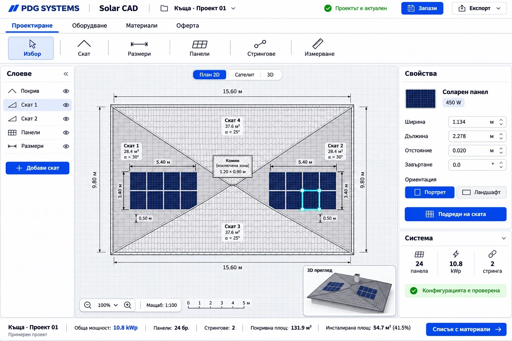

PDG Solar CAD
Онлайн планиране на фотоволтаични панели върху покрив
Очертайте скатовете на картата, задайте наклона и азимута им и подредете фотоволтаичните панели. Прегледайте разположението в 2D и 3D и запазете проекта, за да го редактирате по-късно.
Редакторът изисква вход в профил. Ако нямате профил, създайте го от страницата за вход.

Примерен проект с 24 панела
Примерът зарежда покрив с готова подредба на 24 панела. Изберете скат, маркирайте панел и пробвайте да го преместите или завъртите. В обобщението на проекта можете да проследите броя на панелите и общата им номинална мощност.
За да запазите своя вариант, изберете „Изтегли JSON файл“ от менюто на проекта. По-късно можете да заредите файла чрез „Отвори JSON файл“.
Отворете примерния проект →Как да създадете проект за свой покрив
- Очертайте скатовете. Намерете обекта на картата. С „Чертай покрив“ отбележете върховете на първия скат и натиснете „Завърши скат“. Повторете за всеки скат, който ще използвате.
- Задайте параметрите на ската. Проверете контура и въведете наклон и азимут. Ако разполагате с измерена площ, можете да я въведете в полето „Ръчна площ“.
- Подредете панелите. След очертаването отворете CAD работната площ. Изберете скат и настройте панелите. Изберете ориентация „Портрет“ или „Ландшафт“ и сравнете подредбите. Предвидете свободно място около препятствията.
- Прегледайте и запазете проекта. Използвайте изгледите 2D и 3D, за да проверите подредбата. Запазете проекта в профила си или изтеглете JSON файл.
Чести въпроси
Мога ли да използвам само размерите от картата?
Размерите от картата са ориентировъчни. Преди избор на конструкция и монтаж потвърдете размерите, препятствията и състоянието на покрива на място.
Какво означава мощност в kWp?
Това е сборът на номиналната мощност на поставените панели. Очакваното производство се оценява отделно според мястото, ориентацията и засенчването.
От проект към оборудване
Разгледайте техническите параметри и цените на компонентите. Преди поръчка уточнете съвместимостта, наличността и доставката.
Нуждаете се от съдействие?
Изпратете размерите, вида на обекта и изискванията си. Ще уточним подходящото оборудване и следващите стъпки.
Чертежът е помощен инструмент. Окончателният избор и изпълнението се проверяват от квалифициран специалист според конкретния обект.